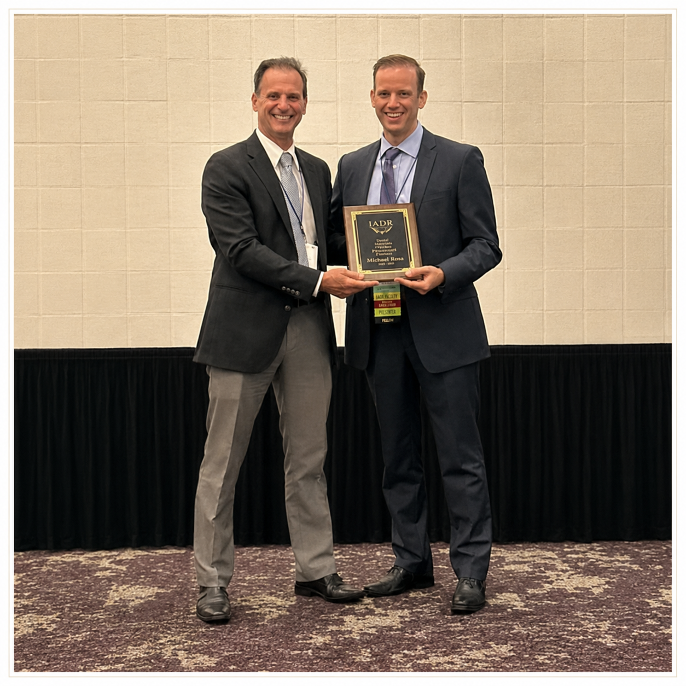

A/P Rosa completes his term as president of the IADR Dental Materials Group
After leading one of the IADR’s most active and internationally recognised divisions, A/P Rosa concludes his presidency of the Dental Materials Group.

A/P Vinicius Rosa has concluded his term as president of the IADR Dental Materials Group (DMG) — one of the largest and most scientifically active divisions of the International Association for Dental, Oral and Craniofacial Research. The DMG brings together researchers working across dental polymers, ceramics, composites, adhesives, bioactive cements, and tissue-engineering scaffolds. During his tenure, A/P Rosa led the group’s scientific programming at the IADR General Sessions and contributed to shaping the division’s international agenda.
Serving as DMG president requires not only scientific credibility in the field but also the organisational capacity to represent a diverse, global membership spanning dozens of countries and research traditions. A/P Rosa’s presidency drew on his extensive track record in dental biomaterials research, his prior engagement with IADR governance as a board member, and his commitment to building connections between research communities across different regions and career stages.
Leadership in science is about creating space for others to do their best work.
The IADR Dental Materials Group has played a central role in shaping the scientific agenda of dental materials research since its founding. Past presidents have included some of the most influential figures in the history of dental materials science. A/P Rosa’s service at the helm of this group adds an important chapter to his record of leadership in international dental research organisations and reflects the global reach and influence of his research programme.